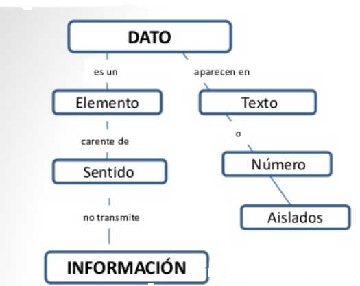
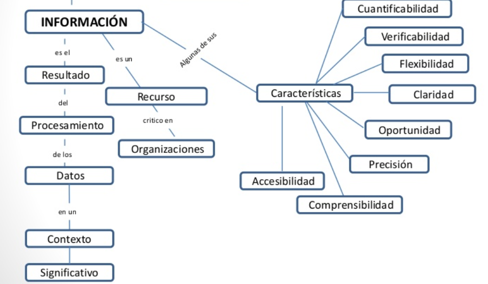

Los Siguientes Conceptos son necesarios para entender, lo que es un sistema de información.
El Concepto de Datos
Datos son los hechos que describen sucesos y entidades." Datos" es una palabra en plural que se refiere a más de un hecho. A un hecho simple se le denomina "data-ítem" o elemento de dato.
Los datos son comunicados por varios tipos de símbolos tales como las letras del alfabeto, números, movimientos de labios,
puntos y rayas, señales con la mano, dibujos, etc. Estos símbolos se pueden ordenar y reordenar de forma utilizable y se les denomina información.
-Los datos son símbolos que describen condiciones, hechos, situaciones o valores. Los datos se caracterizan por no contener ninguna información. Un dato puede significar un número, una letra, un signo ortográfico o cualquier símbolo que represente una cantidad, una medida, una palabra o una descripción.
La importancia de los datos está en su capacidad de asociarse dentro de un contexto para convertirse en información. Por si mismos los datos no tienen capacidad de comunicar un significado y por tanto no pueden afectar el comportamiento de quien los recibe. Para ser útiles, los datos deben convertirse en información para ofrecer un significado, conocimiento, ideas o conclusiones.

La información no es un dato conjunto cualquiera de ellos. Es más bien una colección de hechos significativos y pertinentes, para el organismo u organización que los percibe. La definición de información es la siguiente: Información es un conjunto de datos significativos y pertinentes que describan sucesos o entidades.

A continuación se muestra un vídeo que explica de forma detallada lo que tratamos de explicar aquí: